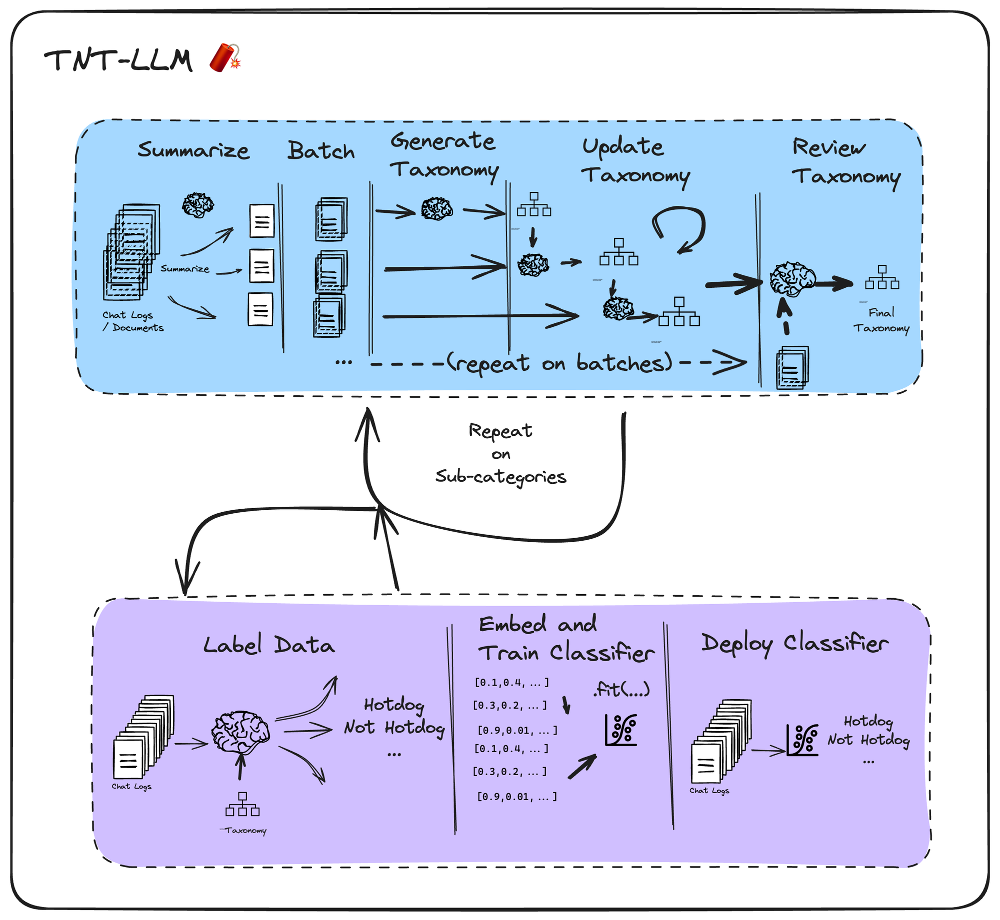

TNT-LLM: Text Mining at Scale¶
TNT-LLM by Wan, et. al describes a taxonomy generation and classification system developed by Microsoft for their Bing Copilot application.
It generates a rich, interpretable taxonomy of user intents (or other categories) from raw conversation logs. This taxonomy can then be used downstream by LLMs to label logs, which in turn can be used as training data to adapt a cheap classifier (such as logistic regression classifier on embeddings) that can be deployed in your app.
TNT-LLM has three main phases:
- Generate Taxonomy
- Label Training Data
- Finetune classifier + deploy
When applying LangGraph in this notebook, we will focus on the first phase: taxonomy generation (blue in the diagram below). We then show how to label and fit the classifier in subsequent steps below.

To generate the taxonomy, TNT-LLM proposes 5 steps:
- Summarize chat logs using a lower-cost LLM (batched over all logs in the sample)
- Batch the logs into random minibatches
- Generate an initial taxonomy from the first minibatch
- Update the taxonomy on each subsequent minibatch via a ritique and revise prompt
- Review the final taxonomy, scoring its quality and generating a final value using a final sample.
Setup¶
First, let's install our required packages and set our API keys
%%capture --no-stderr
%pip install -U langgraph langchain_anthropic langsmith langchain-community
%pip install -U sklearn langchain_openai
import getpass
import os
def _set_env(var: str):
if os.environ.get(var):
return
os.environ[var] = getpass.getpass(var + ":")
_set_env("ANTHROPIC_API_KEY")
Set up LangSmith for LangGraph development
Sign up for LangSmith to quickly spot issues and improve the performance of your LangGraph projects. LangSmith lets you use trace data to debug, test, and monitor your LLM apps built with LangGraph — read more about how to get started here.
Define the graph¶
Graph State¶
Since each node of a StateGraph accepts the state (and returns an updated state), we'll define that at the outset.
Our flow takes in a list of documents, batches them, and then generates and refines candidate taxonomies as interpretable "clusters".
import logging
import operator
from typing import Annotated, List, Optional
from typing_extensions import TypedDict
logging.basicConfig(level=logging.WARNING)
logger = logging.getLogger("tnt-llm")
class Doc(TypedDict):
id: str
content: str
summary: Optional[str]
explanation: Optional[str]
category: Optional[str]
class TaxonomyGenerationState(TypedDict):
# The raw docs; we inject summaries within them in the first step
documents: List[Doc]
# Indices to be concise
minibatches: List[List[int]]
# Candidate Taxonomies (full trajectory)
clusters: Annotated[List[List[dict]], operator.add]
Define nodes¶
1. Summarize Docs¶
Chat logs can get quite long. Our taxonomy generation step needs to see large, diverse minibatches to be able to adequately capture the distribution of categories. To ensure they can all fit efficiently into the context window, we first summarize each chat log. Downstream steps will use these summaries instead of the raw doc content.
import re
from langchain import hub
from langchain_anthropic import ChatAnthropic
from langchain_core.output_parsers import StrOutputParser
from langchain_core.runnables import RunnableConfig, RunnableLambda, RunnablePassthrough
summary_prompt = hub.pull("wfh/tnt-llm-summary-generation").partial(
summary_length=20, explanation_length=30
)
def parse_summary(xml_string: str) -> dict:
summary_pattern = r"<summary>(.*?)</summary>"
explanation_pattern = r"<explanation>(.*?)</explanation>"
summary_match = re.search(summary_pattern, xml_string, re.DOTALL)
explanation_match = re.search(explanation_pattern, xml_string, re.DOTALL)
summary = summary_match.group(1).strip() if summary_match else ""
explanation = explanation_match.group(1).strip() if explanation_match else ""
return {"summary": summary, "explanation": explanation}
summary_llm_chain = (
summary_prompt | ChatAnthropic(model="claude-3-haiku-20240307") | StrOutputParser()
# Customize the tracing name for easier organization
).with_config(run_name="GenerateSummary")
summary_chain = summary_llm_chain | parse_summary
# Now combine as a "map" operation in a map-reduce chain
# Input: state
# Output: state U summaries
# Processes docs in parallel
def get_content(state: TaxonomyGenerationState):
docs = state["documents"]
return [{"content": doc["content"]} for doc in docs]
map_step = RunnablePassthrough.assign(
summaries=get_content
# This effectively creates a "map" operation
# Note you can make this more robust by handling individual errors
| RunnableLambda(func=summary_chain.batch, afunc=summary_chain.abatch)
)
def reduce_summaries(combined: dict) -> TaxonomyGenerationState:
summaries = combined["summaries"]
documents = combined["documents"]
return {
"documents": [
{
"id": doc["id"],
"content": doc["content"],
"summary": summ_info["summary"],
"explanation": summ_info["explanation"],
}
for doc, summ_info in zip(documents, summaries)
]
}
# This is actually the node itself!
map_reduce_chain = map_step | reduce_summaries
API Reference: ChatAnthropic | StrOutputParser | RunnableConfig | RunnableLambda | RunnablePassthrough
2. Split into Minibatches¶
Each minibatch contains a random sample of docs. This lets the flow identify inadequacies in the current taxonomy using new data.
import random
def get_minibatches(state: TaxonomyGenerationState, config: RunnableConfig):
batch_size = config["configurable"].get("batch_size", 200)
original = state["documents"]
indices = list(range(len(original)))
random.shuffle(indices)
if len(indices) < batch_size:
# Don't pad needlessly if we can't fill a single batch
return [indices]
num_full_batches = len(indices) // batch_size
batches = [
indices[i * batch_size : (i + 1) * batch_size] for i in range(num_full_batches)
]
leftovers = len(indices) % batch_size
if leftovers:
last_batch = indices[num_full_batches * batch_size :]
elements_to_add = batch_size - leftovers
last_batch += random.sample(indices, elements_to_add)
batches.append(last_batch)
return {
"minibatches": batches,
}
3.a Taxonomy Generation Utilities¶
This section of the graph is a generate -> update 🔄 -> review cycle. Each node shares a LOT of logic, which we have factored out into the shared functions below.
from typing import Dict
from langchain_core.runnables import Runnable
def parse_taxa(output_text: str) -> Dict:
"""Extract the taxonomy from the generated output."""
cluster_matches = re.findall(
r"\s*<id>(.*?)</id>\s*<name>(.*?)</name>\s*<description>(.*?)</description>\s*",
output_text,
re.DOTALL,
)
clusters = [
{"id": id.strip(), "name": name.strip(), "description": description.strip()}
for id, name, description in cluster_matches
]
# We don't parse the explanation since it isn't used downstream
return {"clusters": clusters}
def format_docs(docs: List[Doc]) -> str:
xml_table = "<conversations>\n"
for doc in docs:
xml_table += f'<conv_summ id={doc["id"]}>{doc["summary"]}</conv_summ>\n'
xml_table += "</conversations>"
return xml_table
def format_taxonomy(clusters):
xml = "<cluster_table>\n"
for label in clusters:
xml += " <cluster>\n"
xml += f' <id>{label["id"]}</id>\n'
xml += f' <name>{label["name"]}</name>\n'
xml += f' <description>{label["description"]}</description>\n'
xml += " </cluster>\n"
xml += "</cluster_table>"
return xml
def invoke_taxonomy_chain(
chain: Runnable,
state: TaxonomyGenerationState,
config: RunnableConfig,
mb_indices: List[int],
) -> TaxonomyGenerationState:
configurable = config["configurable"]
docs = state["documents"]
minibatch = [docs[idx] for idx in mb_indices]
data_table_xml = format_docs(minibatch)
previous_taxonomy = state["clusters"][-1] if state["clusters"] else []
cluster_table_xml = format_taxonomy(previous_taxonomy)
updated_taxonomy = chain.invoke(
{
"data_xml": data_table_xml,
"use_case": configurable["use_case"],
"cluster_table_xml": cluster_table_xml,
"suggestion_length": configurable.get("suggestion_length", 30),
"cluster_name_length": configurable.get("cluster_name_length", 10),
"cluster_description_length": configurable.get(
"cluster_description_length", 30
),
"explanation_length": configurable.get("explanation_length", 20),
"max_num_clusters": configurable.get("max_num_clusters", 25),
}
)
return {
"clusters": [updated_taxonomy["clusters"]],
}
API Reference: Runnable
3. Generate initial taxonomy¶
# We will share an LLM for each step of the generate -> update -> review cycle
# You may want to consider using Opus or another more powerful model for this
taxonomy_generation_llm = ChatAnthropic(
model="claude-3-haiku-20240307", max_tokens_to_sample=2000
)
## Initial generation
taxonomy_generation_prompt = hub.pull("wfh/tnt-llm-taxonomy-generation").partial(
use_case="Generate the taxonomy that can be used to label the user intent in the conversation.",
)
taxa_gen_llm_chain = (
taxonomy_generation_prompt | taxonomy_generation_llm | StrOutputParser()
).with_config(run_name="GenerateTaxonomy")
generate_taxonomy_chain = taxa_gen_llm_chain | parse_taxa
def generate_taxonomy(
state: TaxonomyGenerationState, config: RunnableConfig
) -> TaxonomyGenerationState:
return invoke_taxonomy_chain(
generate_taxonomy_chain, state, config, state["minibatches"][0]
)
4. Update Taxonomy¶
This is a "critique -> revise" step that is repeated N times.
taxonomy_update_prompt = hub.pull("wfh/tnt-llm-taxonomy-update")
taxa_update_llm_chain = (
taxonomy_update_prompt | taxonomy_generation_llm | StrOutputParser()
).with_config(run_name="UpdateTaxonomy")
update_taxonomy_chain = taxa_update_llm_chain | parse_taxa
def update_taxonomy(
state: TaxonomyGenerationState, config: RunnableConfig
) -> TaxonomyGenerationState:
which_mb = len(state["clusters"]) % len(state["minibatches"])
return invoke_taxonomy_chain(
update_taxonomy_chain, state, config, state["minibatches"][which_mb]
)
5. Review Taxonomy¶
This runs once we've processed all the minibatches.
taxonomy_review_prompt = hub.pull("wfh/tnt-llm-taxonomy-review")
taxa_review_llm_chain = (
taxonomy_review_prompt | taxonomy_generation_llm | StrOutputParser()
).with_config(run_name="ReviewTaxonomy")
review_taxonomy_chain = taxa_review_llm_chain | parse_taxa
def review_taxonomy(
state: TaxonomyGenerationState, config: RunnableConfig
) -> TaxonomyGenerationState:
batch_size = config["configurable"].get("batch_size", 200)
original = state["documents"]
indices = list(range(len(original)))
random.shuffle(indices)
return invoke_taxonomy_chain(
review_taxonomy_chain, state, config, indices[:batch_size]
)
Compile the Graph¶
With all the functionality defined, we can build the graph!
from langgraph.graph import StateGraph, START, END
graph = StateGraph(TaxonomyGenerationState)
graph.add_node("summarize", map_reduce_chain)
graph.add_node("get_minibatches", get_minibatches)
graph.add_node("generate_taxonomy", generate_taxonomy)
graph.add_node("update_taxonomy", update_taxonomy)
graph.add_node("review_taxonomy", review_taxonomy)
graph.add_edge("summarize", "get_minibatches")
graph.add_edge("get_minibatches", "generate_taxonomy")
graph.add_edge("generate_taxonomy", "update_taxonomy")
def should_review(state: TaxonomyGenerationState) -> str:
num_minibatches = len(state["minibatches"])
num_revisions = len(state["clusters"])
if num_revisions < num_minibatches:
return "update_taxonomy"
return "review_taxonomy"
graph.add_conditional_edges(
"update_taxonomy",
should_review,
# Optional (but required for the diagram to be drawn correctly below)
{"update_taxonomy": "update_taxonomy", "review_taxonomy": "review_taxonomy"},
)
graph.add_edge("review_taxonomy", END)
graph.add_edge(START, "summarize")
app = graph.compile()
API Reference: StateGraph | START | END
from IPython.display import Image, display
try:
display(Image(app.get_graph().draw_mermaid_png()))
except Exception:
# This requires some extra dependencies and is optional
pass
![]()
Use the graph¶
The docs can contain any content, but we've found it works really well on chat bot logs, such as those captured by LangSmith.
We will use that as an example below. Update the project_name to your own LangSmith project.
You will likely have to customize the run_to_doc function below, since your expected keys may differ from those of this notebook's author.
from datetime import datetime, timedelta
from langsmith import Client
project_name = "YOUR PROJECT NAME" # Update to your own project
client = Client()
past_week = datetime.now() - timedelta(days=7)
runs = list(
client.list_runs(
project_name=project_name,
filter="eq(is_root, true)",
start_time=past_week,
# We only need to return the inputs + outputs
select=["inputs", "outputs"],
)
)
# Convert the langsmith traces to our graph's Doc object.
def run_to_doc(run) -> Doc:
turns = []
idx = 0
for turn in run.inputs.get("chat_history") or []:
key, value = next(iter(turn.items()))
turns.append(f"<{key} idx={idx}>\n{value}\n</{key}>")
idx += 1
turns.append(
f"""
<human idx={idx}>
{run.inputs['question']}
</human>"""
)
if run.outputs and run.outputs["output"]:
turns.append(
f"""<ai idx={idx+1}>
{run.outputs['output']}
</ai>"""
)
return {
"id": str(run.id),
"content": ("\n".join(turns)),
}
Invoke¶
Now convert the runs to docs and kick off your graph flow. This will take some time! The summary step takes the longest. If you want to speed things up, you could try splitting the load across model providers.
from langchain_community.cache import InMemoryCache
from langchain.globals import set_llm_cache
# Optional. If you are running into errors or rate limits and want to avoid repeated computation,
# you can set this while debugging
set_llm_cache(InMemoryCache())
API Reference: InMemoryCache | set_llm_cache
# We will randomly sample down to 1K docs to speed things up
docs = [run_to_doc(run) for run in runs if run.inputs]
docs = random.sample(docs, min(len(docs), 1000))
use_case = (
"Generate the taxonomy that can be used both to label the user intent"
" as well as to identify any required documentation (references, how-tos, etc.)"
" that would benefit the user."
)
stream = app.stream(
{"documents": docs},
{
"configurable": {
"use_case": use_case,
# Optional:
"batch_size": 400,
"suggestion_length": 30,
"cluster_name_length": 10,
"cluster_description_length": 30,
"explanation_length": 20,
"max_num_clusters": 25,
},
# We batch summarize the docs. To avoid getting errors, we will limit the
# degree of parallelism to permit.
"max_concurrency": 2,
},
)
for step in stream:
node, state = next(iter(step.items()))
print(node, str(state)[:20] + " ...")
Final Result¶
Below, render the final result as markdown:
from IPython.display import Markdown
def format_taxonomy_md(clusters):
md = "## Final Taxonomy\n\n"
md += "| ID | Name | Description |\n"
md += "|----|------|-------------|\n"
# Fill the table with cluster data
for label in clusters:
id = label["id"]
name = label["name"].replace(
"|", "\\|"
) # Escape any pipe characters within the content
description = label["description"].replace(
"|", "\\|"
) # Escape any pipe characters
md += f"| {id} | {name} | {description} |\n"
return md
Markdown(format_taxonomy_md(step["__end__"]["clusters"][-1]))
Final Taxonomy¶
| ID | Name | Description |
|---|---|---|
| 1 | Troubleshooting Network Connectivity Issues | Resolving problems with DNS, network connections, and GitHub extension activation. |
| 2 | Extracting and Analyzing Data | Retrieving and processing data from various sources like text files, databases, and APIs. |
| 3 | Providing Healthcare Insights | Generating medical diagnosis, symptom checking, drug information, and skin condition analysis. |
| 4 | Configuring and Optimizing Models | Adjusting model parameters and hyperparameters to improve performance for a given task. |
| 5 | Generating Creative Poetry | Creating poems using language models and AI-powered tools. |
| 6 | Interacting with Databases | Querying databases, extracting data, and managing errors during data processing. |
| 7 | Querying Vector Databases | Interacting with vector databases like Milvus to store and retrieve high-dimensional data. |
| 8 | Generating Synthetic Data | Creating synthetic data using language models and machine learning techniques. |
| 9 | Integrating Tools and Workflows | Incorporating various tools and libraries into a cohesive workflow for different tasks. |
| 10 | Improving Information Retrieval | Storing and querying multiple vectors per document for better semantic understanding. |
| 11 | Processing Documents and Extracting Text | Parsing and extracting text from various document formats like PDF, DOCX, and HTML. |
| 12 | Building Local Knowledge Bases | Creating knowledge bases from text files, handling text splitting, embeddings, and storage. |
| 13 | Optimizing Conversational Retrieval | Troubleshooting and improving the performance of the ConversationalRetrievalChain in LangChain. |
| 14 | Connecting Databases and Using Agents | Connecting to databases, using agents, and understanding the differences between agent types. |
| 15 | Introspecting LangChain Tools | Accessing and retrieving details about the functions and source code of LangChain tools. |
| 16 | Generating Styled Answers with Retrieval Augmentation | Creating a QA system that generates well-cited answers in a specific style. |
| 17 | Using ZERO_SHOT_REACT_DESCRIPTION Agents | Applying the ZERO_SHOT_REACT_DESCRIPTION agent type in LangChain for chat models. |
| 18 | Automating Microlearning Course Creation | Generating microlearning courses based on input parameters like topic, volume, and learning style. |
| 19 | Integrating with Chroma Vector Store | Storing and retrieving data in the Chroma vector database, including handling document embeddings. |
| 20 | Managing LangChain Callback Tokens | Understanding and utilizing the callback token feature in the LCEL chain. |
| 21 | Troubleshooting FastAPI Deployments | Resolving issues with deploying a React app with a FastAPI backend. |
| 22 | Analyzing Data with LangChain Agents | Using LangChain agents to interact with Pandas and Spark DataFrames for data exploration. |
| 23 | Implementing the OpenAI Chat API | Implementing the OpenAI chat completion API and understanding the required inputs and outputs. |
| 24 | Comparing LangChain and LLMIndex | Evaluating the differences between LangChain and LLMIndex, including their UI support for Markdown. |
| 25 | Suppressing Tools in AgentExecutor | Temporarily disabling tools in an AgentExecutor for a fixed number of invocations. |
Phase 2: Labeling¶
Now that we have our taxonomy, it's time to label a subset of our data to train a classifier.
Input classification can be useful for anything from in-line prompt optimization (tailor the prompt for each classified intent), to system improvements (identifying categories for which the system doesn't produce good responses) to product analytics (understand which intent categories could be improved to drive profits).
The problem is that LLM-based tagging can be expensive.
Embeddings can be ~100x cheaper to compute, and a simple logistic regression classifier on top of that would add negligible cost.
Let's tag and train a classifier!
Label Training Data¶
Use an LLM to label the data in a fully-automated fashion. For better accuracy, you can sample a portion of the results to label by hand as well to verify the quality.
labeling_prompt = hub.pull("wfh/tnt-llm-classify")
labeling_llm = ChatAnthropic(model="claude-3-haiku-20240307", max_tokens_to_sample=2000)
labeling_llm_chain = (labeling_prompt | labeling_llm | StrOutputParser()).with_config(
run_name="ClassifyDocs"
)
def parse_labels(output_text: str) -> Dict:
"""Parse the generated labels from the predictions."""
category_matches = re.findall(
r"\s*<category>(.*?)</category>.*",
output_text,
re.DOTALL,
)
categories = [{"category": category.strip()} for category in category_matches]
if len(categories) > 1:
logger.warning(f"Multiple selected categories: {categories}")
label = categories[0]
stripped = re.sub(r"^\d+\.\s*", "", label["category"]).strip()
return {"category": stripped}
labeling_chain = labeling_llm_chain | parse_labels
final_taxonomy = step["__end__"]["clusters"][-1]
xml_taxonomy = format_taxonomy(final_taxonomy)
results = labeling_chain.batch(
[
{
"content": doc["content"],
"taxonomy": xml_taxonomy,
}
for doc in docs
],
{"max_concurrency": 5},
return_exceptions=True,
)
# Update the docs to include the categories
updated_docs = [{**doc, **category} for doc, category in zip(docs, results)]
if "OPENAI_API_KEY" not in os.environ:
os.environ["OPENAI_API_KEY"] = getpass("Enter your OPENAI_API_KEY: ")
from langchain_openai import OpenAIEmbeddings
# Consider using other embedding models here too!
encoder = OpenAIEmbeddings(model="text-embedding-3-large")
vectors = encoder.embed_documents([doc["content"] for doc in docs])
embedded_docs = [{**doc, "embedding": v} for doc, v in zip(updated_docs, vectors)]
API Reference: OpenAIEmbeddings
Train Classifier¶
Now that we've extracted the features from the text, we can generate the classifier on them.
import numpy as np
from sklearn.linear_model import LogisticRegression
from sklearn.metrics import accuracy_score, f1_score
from sklearn.model_selection import train_test_split
from sklearn.utils import class_weight
# Create a dictionary mapping category names to their indices in the taxonomy
category_to_index = {d["name"]: i for i, d in enumerate(final_taxonomy)}
category_to_index["Other"] = len(category_to_index)
# Convert category strings to numeric labels
labels = [
category_to_index.get(d["category"], category_to_index["Other"])
for d in embedded_docs
]
label_vectors = [d["embedding"] for d in embedded_docs]
X_train, X_test, y_train, y_test = train_test_split(
label_vectors, labels, test_size=0.2, random_state=42
)
# Calculate class weights
class_weights = class_weight.compute_class_weight(
class_weight="balanced", classes=np.unique(y_train), y=y_train
)
class_weight_dict = dict(enumerate(class_weights))
# Weight the classes to partially handle imbalanced data
model = LogisticRegression(class_weight=class_weight_dict)
model.fit(X_train, y_train)
train_preds = model.predict(X_train)
test_preds = model.predict(X_test)
train_acc = accuracy_score(y_train, train_preds)
test_acc = accuracy_score(y_test, test_preds)
train_f1 = f1_score(y_train, train_preds, average="weighted")
test_f1 = f1_score(y_test, test_preds, average="weighted")
print(f"Train Accuracy: {train_acc:.3f}")
print(f"Test Accuracy: {test_acc:.3f}")
print(f"Train F1 Score: {train_f1:.3f}")
print(f"Test F1 Score: {test_f1:.3f}")
Phase 3: Deploy¶
Now that you have your classifier, you can easily deploy it and apply to future runs! All you need is to embed the input and apply your LogisticRegression classifier. Let's try it. We will use python's joblib library to serialize our sklearn classifier. Below is an example:
from joblib import dump as jl_dump
categories = list(category_to_index)
# Save the model and categories to a file
with open("model.joblib", "wb") as file:
jl_dump((model, categories), file)
To deploy¶
When deploying, you can load the classifier and initialize your embeddings encoder. They fit together easily using LCEL:
from joblib import load as jl_load
from langchain_openai import OpenAIEmbeddings
loaded_model, loaded_categories = jl_load("model.joblib")
encoder = OpenAIEmbeddings(model="text-embedding-3-large")
def get_category_name(predictions):
return [loaded_categories[pred] for pred in predictions]
classifier = (
RunnableLambda(encoder.embed_documents, encoder.aembed_documents)
| loaded_model.predict
| get_category_name
)
API Reference: OpenAIEmbeddings
Example:¶
Assuming you've had some more data come in, you can fetch it and apply it below
client = Client()
past_5_min = datetime.now() - timedelta(minutes=5)
runs = list(
client.list_runs(
project_name=project_name,
filter="eq(is_root, true)",
start_time=past_5_min,
# We only need to return the inputs + outputs
select=["inputs", "outputs"],
limit=100,
)
)
docs = [run_to_doc(r) for r in runs]
INFO:httpx:HTTP Request: POST https://api.openai.com/v1/embeddings "HTTP/1.1 200 OK"
``````output
['Interacting with Databases', 'Optimizing Conversational Retrieval']
Conclusion¶
Congrats on implementing TNT-LLM! While most folks use clustering-based approaches like LDA, k-means, etc. it can often be hard to really interpret what each cluster represents. TNT-LLM generates human-interpretable labels you can use downstream to monitor and improve your application.
The technique also lends itself to hierarchical sub-categorizing: once you have the above taxonomy, use it to label your data, then on each sub-category, generate a new taxonomy using a similar technique to the one described above!